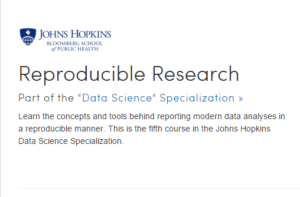
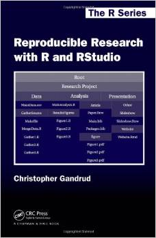
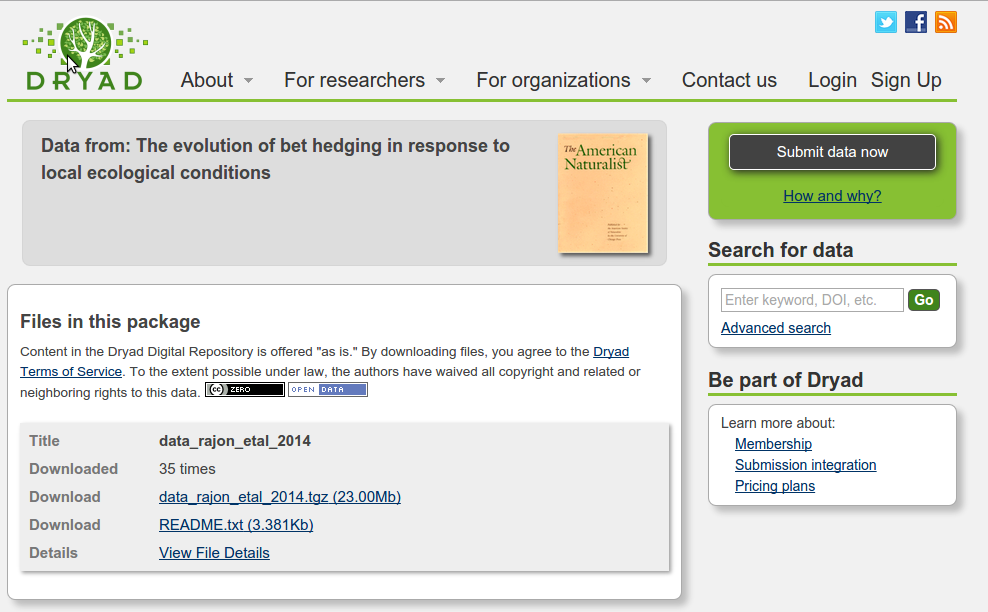
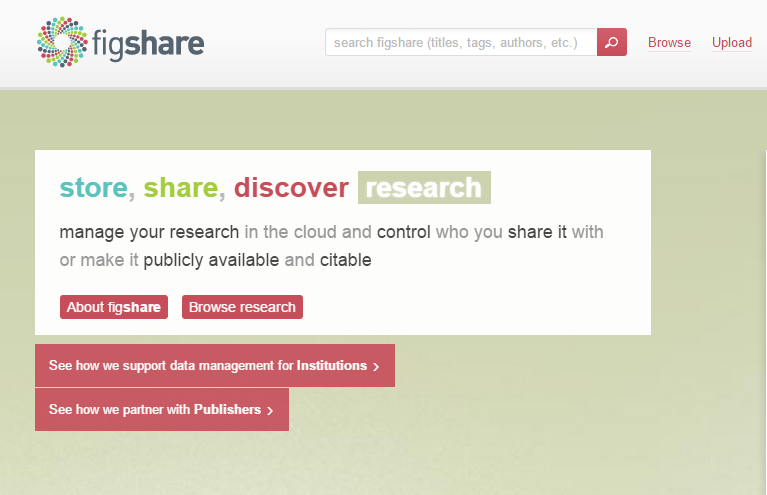
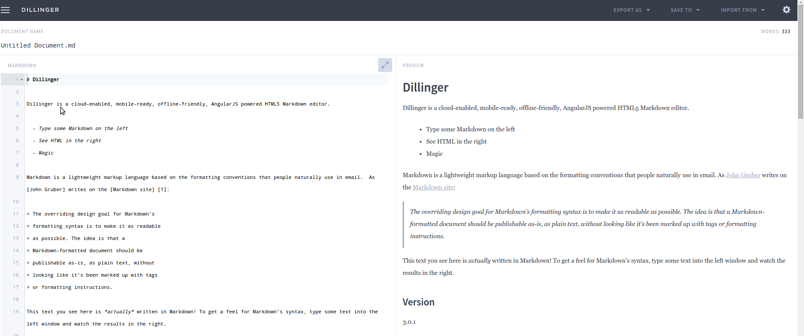
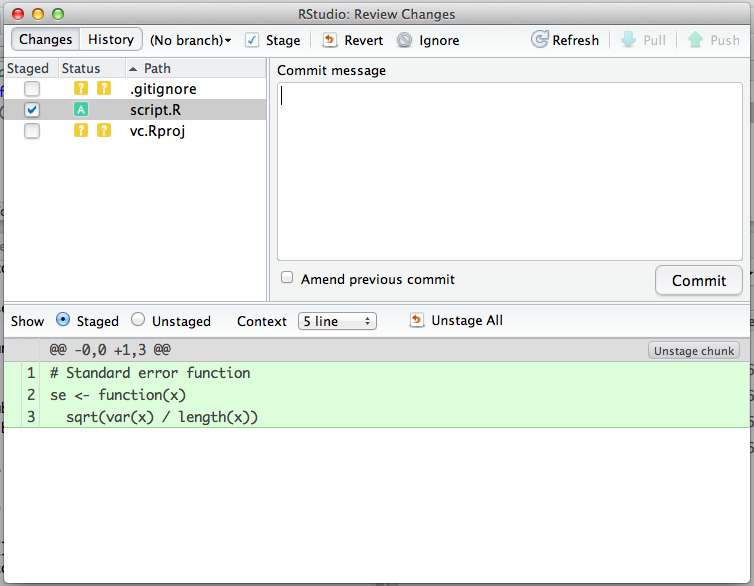
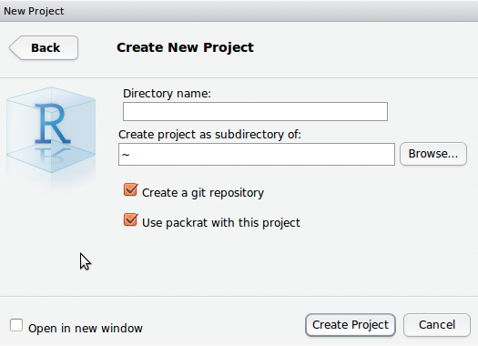
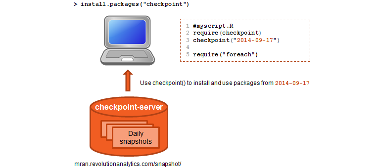

Outline
- The reproducibility crisis.
- The elements of reproducible research.
- Markdown and RMarkdown
- Generating reproducible documents with RStudio
- Dependency management.
Shlomi Lifshits
shlomi.lifshits@yahoo.com
Over the past few years, there has been a growing awareness that many experimentally established "facts" don't seem to hold up to repeated investigation.
This was highlighted in a 2010 article in the New Yorker in which it is claimed that we are facing with a reproducibility crisis.
We will focus on Reproducible Computational Research.

From PLOS
Start with this article by FitzJohn et al..
A book about reproducible research

You can download this paper along with the data (the compilation of the Latex document includes the execution of all the statistical analysis).


WDI and averaged over time (2005-2011). library(dplyr)
library(magrittr)
library(WDI)
library(googleVis)
op <- options(gvis.plot.tag='chart')
avg.internet.users<- WDI(indicator="IT.NET.USER.P2") %>%
group_by(iso2c) %>%
summarise(mean.num.users=round(mean(IT.NET.USER.P2),digit=1))
WDI(indicator="IT.NET.USER.P2") %>% filter(iso2c=="IL")
## iso2c country IT.NET.USER.P2 year
## 1 IL Israel 68.87 2011
## 2 IL Israel 67.50 2010
## 3 IL Israel 63.12 2009
## 4 IL Israel 59.39 2008
## 5 IL Israel 48.13 2007
## 6 IL Israel 27.88 2006
## 7 IL Israel 25.19 2005
avg.internet.users %>% filter(iso2c=="IL")
## Source: local data frame [1 x 2]
##
## iso2c mean.num.users
## 1 IL 51.4
FCMap <- gvisGeoMap(data = avg.internet.users,
locationvar = "iso2c",
numvar = "mean.num.users",
options = list(
colors = "[0xECE7F2, 0xA6BDDB, 0x2B8CBE]",
width = "780px",
height = "500px"))
plot(FCMap)
This document was generated together with the statistical analysis and the graphics generation.
Markdown enables writing in an easy-to-read, easy-to-write plain text format, and convert it to HTML.
Learning markdown is easy using Dillinger.

SWeave.
With R Markdown you can:

| val | str |
| ------------- | ----- |
| 1 | a |
| 2 | b |
| val | str |
|---|---|
| 1 | a |
| 2 | b |
library(xtable)
df<-data.frame(x=c(1,2),y=c("a","b"))
tbl<-xtable(df)
print(tbl,type="html")
| x | y | |
|---|---|---|
| 1 | 1.00 | a |
| 2 | 2.00 | b |

Packrat is a dependency management system for R. Creates a private package library for a given R project (i.e. working directory).

When you start an R session in a packrat project directory, R will only look for packages in your private library; and anytime you install or remove a package, those changes will be made to your private library.
Revolution stores daily snapshots of all CRAN packages. You can access these daily snapshots using the checkpoint package, which installs and consistently use these packages just as they existed at the snapshot date.

set.seed() function to set the seed and to specify the random number generator to use.set.seed(42)
rnorm(5)
## [1] 1.3710 -0.5647 0.3631 0.6329 0.4043
rnorm(5)
## [1] -0.10612 1.51152 -0.09466 2.01842 -0.06271
set.seed(42)
rnorm(5)
## [1] 1.3710 -0.5647 0.3631 0.6329 0.4043
sessionInfo()
## R version 3.1.2 (2014-10-31)
## Platform: x86_64-pc-linux-gnu (64-bit)
##
## locale:
## [1] LC_CTYPE=en_US.UTF-8 LC_NUMERIC=C
## [3] LC_TIME=en_US.UTF-8 LC_COLLATE=en_US.UTF-8
## [5] LC_MONETARY=en_US.UTF-8 LC_MESSAGES=en_US.UTF-8
## [7] LC_PAPER=en_US.UTF-8 LC_NAME=C
## [9] LC_ADDRESS=C LC_TELEPHONE=C
## [11] LC_MEASUREMENT=en_US.UTF-8 LC_IDENTIFICATION=C
##
## attached base packages:
## [1] stats graphics grDevices utils datasets methods base
##
## other attached packages:
## [1] xtable_1.7-3 googleVis_0.5.2 WDI_2.4 RJSONIO_1.2-0.2
## [5] magrittr_1.0.1 dplyr_0.3.0.2 slidify_0.4.5
##
## loaded via a namespace (and not attached):
## [1] assertthat_0.1 codetools_0.2-9 DBI_0.3.1 digest_0.6.4
## [5] evaluate_0.5.5 formatR_0.10 knitr_1.6 lazyeval_0.1.9
## [9] markdown_0.7 parallel_3.1.2 Rcpp_0.11.3 stringr_0.6.2
## [13] tools_3.1.2 whisker_0.3-2 yaml_2.1.13